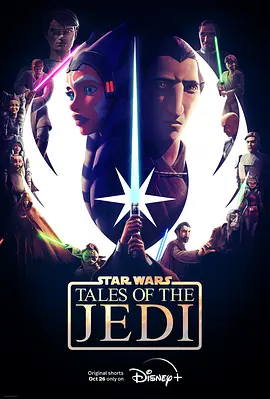

8.5
星球大战：绝地传奇
Star Wars: Tales of the Jedi
2022
美国
评分 8.5
导演:
演员:
罗莎里奥·道森 / 连姆·尼森 / 艾什莉·埃克斯坦 / 詹妮娜·加万卡 / 米切尔·理查德森
类型:
剧情,动作,奇幻
剧情简介
这部由六个短篇组成的动画剧集，将目光投向绝地武士鲜为人知的过往。故事在一段段独立而紧凑的篇章中展开，让观众看到阿索卡·塔诺在成长路上遇见的第一次试炼，也让年轻的奎刚·金在导师引导下的内心变化逐渐浮现。每一集以不同场景切入：荒野村落的静谧、战火边缘的紧张、议会之间的压迫与沉默，原力的呼吸在细微处不断回响。阿索卡从婴孩时期便展露出超乎常人的敏锐，母亲的引导与族群的传统渲染出原力最朴素的一面。当她长大后面对真正的危险，她的选择与行动让人看见绝地精神在困境中的诞生。另一条线索则围绕杜库伯爵转变前后的心境，他在执行任务时屡次撞见共和国体制的阴影，怀疑与不满在心底生长，使光明与黑暗的界限变得模糊。这些篇章没有宏大的银河战役，却借着片段式的叙事，让人物的信念、困惑与裂痕呈现得更加鲜活。短片的节奏干脆利落，画面与情绪之间保持着强烈张力。无论是光剑划破空气的瞬间，还是角色之间沉默对视的时刻，都让这部作品在简短篇幅中拥有深刻力量。《绝地传奇》用细节补足了星战宇宙的情感空白，让熟悉的角色在新的视角下拥有更立体的灵魂。